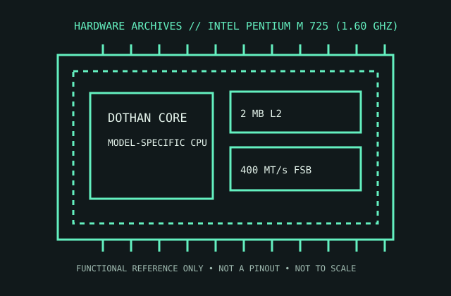

[ PENTIUM PRO AND PENTIUM M // IDENTIFIED PROCESSOR ]
Intel Pentium M 725 (1.60 GHz)
The Pentium M 725 is a Dothan mobile processor intended for compact notebooks; its low-power design and 2 MB L2 cache distinguish it from the earlier Banias generation.

MODEL IDENTIFICATION: Intel Pentium M 725 (1.60 GHz). Compare the printed part number, speed grade, package, cache configuration, and stepping with the cited documentation; do not transfer one variant’s limits to another.
Recorded specifications
| Cataloged part | Intel Pentium M 725 (1.60 GHz) |
|---|---|
| Era / family | Intel Pentium M / Dothan, 2004; 725 model, 1.60 GHz. |
| Key specifications | 1.60 GHz; 400 MT/s quad-pumped front-side bus; 2 MB L2 cache; 90 nm; 21 W TDP; Socket 479 mPGA package; Enhanced SpeedStep. |
| Interface / fit | Requires a notebook/mainboard designed for Dothan Socket 479 and a compatible chipset/BIOS. Verify exact board support and power/thermal design; this is not desktop Socket 478. |
| Variant distinction | Pentium M 725 is Dothan with 2 MB L2. The similarly numbered 715/735 and earlier Banias CPUs differ by clock/cache and stepping; laptop socket/BIOS compatibility is specific. |
Compatibility and variants
- Requires a notebook/mainboard designed for Dothan Socket 479 and a compatible chipset/BIOS. Verify exact board support and power/thermal design; this is not desktop Socket 478.
- Pentium M 725 is Dothan with 2 MB L2. The similarly numbered 715/735 and earlier Banias CPUs differ by clock/cache and stepping; laptop socket/BIOS compatibility is specific.
- Confirm the system manufacturer’s exact processor support list, firmware minimum, board revision, power/thermal envelope, and memory requirements before installation.
Service and archival notes
Record the sSpec and stepping and retain the original notebook heatsink/fan and thermal pads. Check board-level support before installing a mobile part; the socket alone does not establish fit.
Preserve provenance and a record of the exact marking, condition, tested board/platform, firmware, cooling, memory configuration, and test conditions. Separate published specification limits from observations made on a particular surviving system.
Sources & further reading
- Intel Pentium M Processor datasheet — Dothan model and electrical informationSpecific model or manufacturer-family reference; verify revision and configuration against the device marking and platform documentation.
- Pentium M 725 model identification/specification cross-referenceSpecific model or manufacturer-family reference; verify revision and configuration against the device marking and platform documentation.
- Intel Pentium M processor family overview — mobile product historySpecific model or manufacturer-family reference; verify revision and configuration against the device marking and platform documentation.
Third-party reference pages and document archives are finding aids. The matching manufacturer datasheet, product specification, and board support documentation take precedence for the exact revision and host.